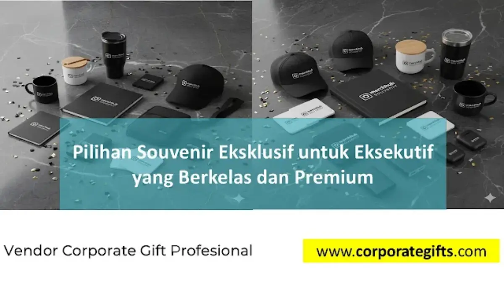

Corporate Gifts ID - Memberikan souvenir custom premium kepada pimpinan perusahaan atau mitra bisnis strategis bukan lagi sekadar formalitas tanda terima kasih, melainkan strategi komunikasi bisnis tingkat tinggi yang mencerminkan martabat korporat. Memasuki lanskap bisnis modern saat ini, perusahaan menyadari bahwa hadiah untuk kalangan eksekutif (C-Level, Dewan Direksi, dan Komisaris) memerlukan pendekatan kurasi yang jauh lebih personal dan bernilai tinggi dibandingkan merchandise promosi konvensional.
Melalui katalog produk CorporateGifts.ID, souvenir eksklusif dirancang untuk menyampaikan rasa hormat, memperkuat relasi kemitraan, serta menegaskan standar mutu brand pemberi. Setiap elemen, mulai dari pemilihan bahan dasar, presisi grafir inisial, hingga estetika kotak kemasan (hardbox), harus mampu memberikan pengalaman unboxing yang membanggakan dan tak terlupakan bagi penerima.
Poin Kunci Pengadaan Souvenir Eksekutif:
- Investasi Komunikasi Bisnis: Souvenir eksekutif berfungsi sebagai representasi nilai, prestise, dan komitmen kemitraan strategis jangka panjang.
- Empat Pilar Kurasi: Memprioritaskan relevansi gaya hidup penerima, material bermutu tinggi, sentuhan personalisasi inisial nama, serta kemasan mewah.
- Tren Eco-Luxury: Menggabungkan estetika mewah dengan material ramah lingkungan dan tata kelola berkelanjutan (ESG).
- Rekomendasi Utama: Pilihan produk meliputi leather goods asli, jam tangan formal, gadget nirkabel aluminium, dan executive stationery.
Mengapa Souvenir Eksklusif untuk Eksekutif Menjadi Investasi Strategis?
Bagi kalangan eksekutif dan pengambil keputusan, sebuah cinderamata tidak dinilai semata-mata dari nominal harganya, melainkan dari kedalaman makna, fungsionalitas elegan, dan atensi terhadap detail yang dihadirkan. Hadiah korporat yang tepat mampu membuka pintu diplomasi bisnis yang lebih hangat serta membangun loyalitas relasi tingkat tinggi.
Terdapat beberapa alasan fundamental mengapa penyusunan souvenir eksekutif menjadi langkah penting bagi pertumbuhan korporat:
- Meningkatkan Retensi dan Kemitraan Strategis: Mengapresiasi mitra bisnis dengan hadiah berkelas menunjukkan pengakuan atas kontribusi bersama dan komitmen jangka panjang.
- Memperkuat Brand Image Korporat: Kualitas souvenir mencerminkan kualitas layanan dan profesionalisme institusi pemberi.
- Pembeda dari Kompetitor: Sentuhan personalisasi eksklusif membuat perusahaan Anda tampil unggul dan berkarakter di mata jajaran pimpinan.
- Media Diplomasi yang Luwes: Memfasilitasi momen interaksi non-formal yang bernilai positif saat penutupan kesepakatan bisnis besar atau seremoni tahunan.
4 Kriteria Utama Memilih Cinderamata Kelas Eksekutif
Agar hadiah yang diberikan tepat sasaran dan memberikan impresi positif yang mendalam, tim pengadaan perusahaan perlu memperhatikan empat parameter kurasi berikut:
1. Relevan dengan Gaya Hidup Profesional
Pilihlah item yang benar-benar menunjang rutinitas harian eksekutif yang dinamis. Misalnya, travel tech organizer untuk direktur yang sering melakukan perjalanan dinas lintas kota, atau desk accessories mewah dari marmer dan kuningan untuk melengkapi ruang kerja formal.
2. Material Premium dan Daya Tahan Tinggi
Hindari produk sekali pakai berbahan plastik tipis. Prioritaskan material otentik seperti kulit sapi asli (genuine leather), stainless steel SUS 304/316 tahan karat, kayu jati/walnut dengan finishing natural, atau logam aluminium bertekstur matte.

Sentuhan grafir laser halus dan emboss foil emas pada gift set kulit menambah nilai estetika serta prestise cinderamata korporat.
3. Personalisasi Subtle dan Tidak Mencolok
Para eksekutif cenderung enggan mengenakan atau membawa barang dengan logo perusahaan berukuran raksasa. Terapkan teknik personalisasi subtil, seperti deboss tanpa warna, laser engrave monokrom di sudut tersembunyi, atau ukiran inisial nama penerima secara eksklusif.
4. Packaging Mewah (Bespoke Hardbox)
Kesan pertama terbentuk saat penerima memegang kemasan luarnya. Gunakan rigid box bermaterial tebal dilapisi fancy paper bertekstur, penutup magnetik, serta busa velvet eva form bagian dalam yang dipotong presisi sesuai lekuk produk.
Rekomendasi Kategori Souvenir Premium untuk Jajaran C-Level
Berikut adalah beberapa kategori cinderamata unggulan yang paling diminati oleh perusahaan korporat, BUMN, dan multinasional untuk cinderamata pimpinan:
A. Genuine Leather Goods Custom
Produk berbahan kulit asli selalu memancarkan aura kemewahan klasik yang tak lekang oleh waktu. Pilihan produk meliputi briefcase kerja, clutch dokumen, travel passport wallet, dompet kartu dengan perlindungan RFID, hingga gantungan kunci kulit dengan ring kuningan solid.
B. Smart Gadget & Tech Accessories
Eksekutif modern sangat mengapresiasi efisiensi teknologi. Opsi souvenir teknologi mencakup wireless charging pad multifungsi berbahan kayu walnut, power bank ultra-slim berbalut aluminium aero-grade, noise-cancelling earphone nirkabel, atau smart digital agenda pen yang dapat menyinkronkan tulisan tangan ke gawai pintar.
C. Luxury Stationery & Writing Instruments
Pena berkelas tetap menjadi simbol otoritas dalam penandatanganan dokumen penting. Rollerball pen atau fountain pen berbahan logam berat dengan ujung nib berlapis rhodium/emas, dipadukan dengan buku agenda bersampul kulit full-grain, adalah paket cinderamata yang tak pernah gagal mengesankan penerima.
D. Jam Tangan dan Desk Art Eksklusif
Jam tangan formal berdesain minimalis klasik atau plakat meja berbasis kombinasi kayu sonokeling dan logam kuningan etsa memberikan nilai artistik tinggi yang layak dipajang di meja kerja ruang direksi.
Tabel Karakteristik & Pilihan Souvenir Eksekutif
Tabel berikut merangkum karakteristik produk, pilihan material, dan target penerima yang ideal untuk mempermudah perencanaan anggaran pengadaan B2B:
| Kategori Souvenir | Pilihan Material Unggulan | Teknik Personalisasi | Momen Pemberian Ideal |
|---|---|---|---|
| Executive Leather Set | Kulit Asli (Pull-up / Crazy Horse) | Deboss buta & Grafir inisial nama | Apresiasi tahunan pimpinan & MOU |
| Smart Tech Luxury | Aluminium Anodized & Kayu Walnut | Laser grafir serat presisi tinggi | Kickoff meeting dewan komisaris |
| Prestige Writing Set | Kuningan berlapis krom / Nib emas | Rotary laser engrave logo halus | Penandatanganan kontrak strategis |
| Eco-Luxury Drinkware | Stainless SUS 316 Double Wall Vacuum | UV DTF Emboss atau Grafir laser 360° | Konferensi C-Level & RUPS |
| Bespoke Desk Clock | Kombinasi Marmer Alami & Kuningan | Plat kuningan etsa lapis emas | Purna tugas direksi & Farewell VIP |
Konsep Eco-Luxury: Perpaduan Kemewahan dan Nilai Keberlanjutan
Salah satu transformasi paling signifikan dalam pengadaan korporat modern adalah naiknya pamor konsep eco-luxury. Para pimpinan perusahaan saat ini sangat menjunjung tinggi prinsip Environmental, Social, and Governance (ESG). Memberikan cinderamata ramah lingkungan dengan sentuhan premium membuktikan bahwa perusahaan memiliki komitmen nyata terhadap keberlanjutan bumi.
Produk ramah lingkungan premium tidak berarti tampak sederhana atau kusam. Dengan perlakuan desain mutakhir, material seperti bambu terkarbonisasi, kulit nabati bersertifikasi FSC, katun organik berserat panjang, serta kertas daur ulang berbobot tebal dapat disulap menjadi paket cinderamata yang luar biasa mewah dan eksklusif.
Tips Memilih Vendor Souvenir B2B untuk Kalangan Eksekutif
Mengadakan souvenir untuk level pimpinan tidak boleh disamakan dengan memesan cinderamata massal. Satu kesalahan kecil pada finishing atau keterlambatan pengiriman dapat berdampak langsung pada reputasi korporat. Perhatikan panduan berikut saat memilih mitra vendor:
- Cek Portofolio dan Rekam Jejak Klien: Pastikan vendor berpengalaman melayani instansi BUMN, kementerian, atau korporasi multinasional dengan standar mutu ketat.
- Ketersediaan Sampling Fisik: Vendor profesional selalu menyediakan pembuatan sampel mockup fisik sebelum proses cetak massal berjalan untuk memastikan akurasi warna dan bahan.
- Jaminan Legalitas & Faktur Pajak: Memastikan kelengkapan administrasi pengadaan formal seperti PT resmi, NPWP, dan penerbitan faktur pajak PPN.
- Garansi Penggantian Produk: Adanya Quality Control (QC) ketat dan klausul garansi penggantian penuh jika terdapat cacat produksi pada saat pengiriman.
Pertanyaan Seputar Souvenir Eksekutif (FAQ)
Kesimpulan dan Konsultasi Pengadaan Resmi
Souvenir eksklusif untuk jajaran eksekutif adalah jembatan diplomasi bisnis yang memadukan prestise, fungsionalitas, dan rasa hormat yang mendalam. Dengan memilih material premium dan kemasan yang mewah, perusahaan Anda menanamkan citra profesional yang kokoh di mata para pemangku kepentingan.
Konsultasikan rancangan cinderamata eksekutif Anda bersama CorporateGifts.ID. Jelajahi aneka koleksi di katalog produk resmi kami atau minta penawaran harga B2B melalui formulir permintaan penawaran harga sekarang juga.
Disclaimer: Pilihan spesifikasi material dan kemasan hardbox souvenir eksekutif dapat dikustomisasi secara fleksibel sesuai dengan kebutuhan dan standar pedoman brand perusahaan Anda.